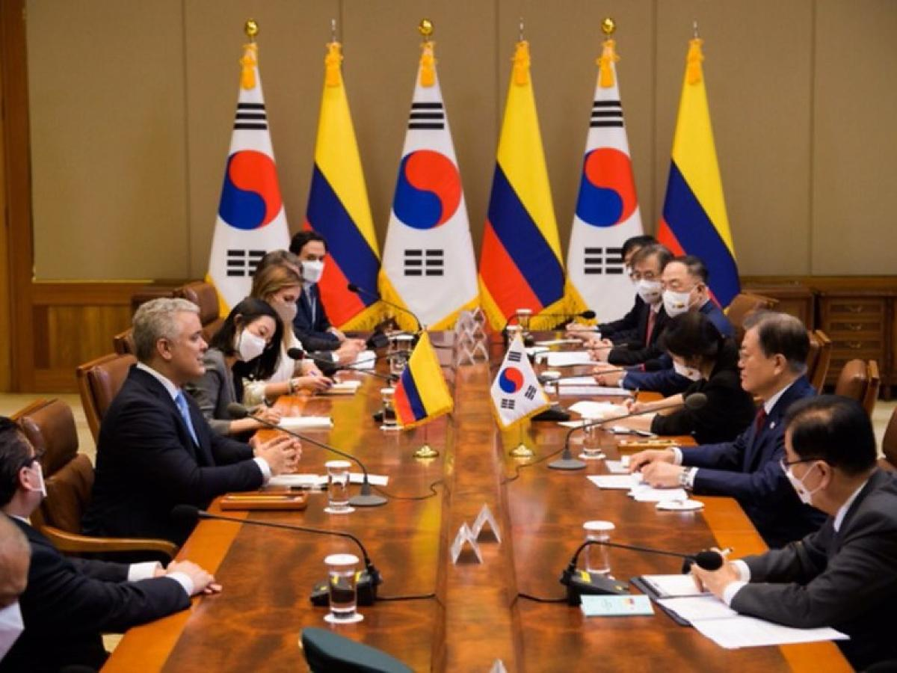

COOPERACION DE COLOMBIA
- El Batallón Colombia: Conformado por 4.314 combatientes del Ejército. Fue la primera unidad militar enviada desde Colombia a un conflicto fuera del continente americano, participando en batallas clave desde 1951 hasta el cese al fuego en 1953 y realizando misiones de vigilancia durante el armisticio.
- La Armada Nacional: Aportó 748 infantes de marina y marineros. Fragatas colombianas (como la ARC Almirante Padilla y ARC Capitán Tono) llegaron en mayo de 1951 para realizar operaciones de patrullaje, escolta y bloqueo naval hasta 1954.
- Bajas: El conflicto cobró la vida de 131 militares colombianos en combate.
- NOTA:Acuerdos bilaterales: Gracias a este respaldo histórico, se han afianzado tratados de libre comercio, diplomacia militar e intercambio cultural.
